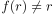
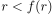
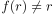
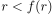
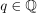
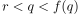
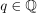
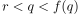
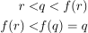

Starrheit der reellen Zahlen
1. Satz
Der Körper der rationale Zahlen ist starr.
2. Beweis
Über einen Beweis durch Widerspruch:
Sei  ein Automorphismus.
Das Argument der Starrheit der rationalen Zahlen lässt sich analog übertragen und es folgt:
Sei , o.B.d.A.  für ein
ein Automorphismus.
Das Argument der Starrheit der rationalen Zahlen lässt sich analog übertragen und es folgt:
Sei , o.B.d.A.  für ein  , so existiert wegen der Dichtheit der rationalen Zahlen in den reellen Zahlen ein  mit 
Dies führt zu einem Widerspruch zur Invarianz der Ordnungsrelation, da gilt:
, so existiert wegen der Dichtheit der rationalen Zahlen in den reellen Zahlen ein  mit 
Dies führt zu einem Widerspruch zur Invarianz der Ordnungsrelation, da gilt:

1